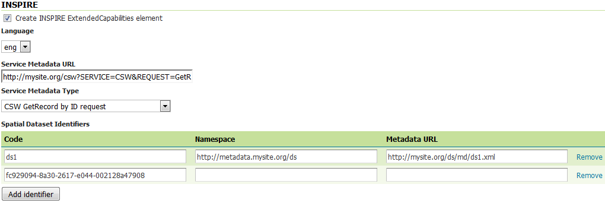

Tutorial setting up a WFS based INSPIRE download service with GeoServer¶
This tutorial shows how one can set up a combination of GeoNetwork and GeoServer to provide download services following technical guidelines for download services.
Note that the technical guidelines allow both Atom/OpenSearch as well as WFS. This tutorial describes how to set up a download service using WFS.
GeoServer¶
To support the INSPIRE data models the geoserver “appschema” plugin needs to be installed. Configuring appschema support in GeoServer is not the goal of this tutorial. Appschema support for INSPIRE is nicely documented by Marcus Sen. Another valuable resource is available at geosolutions. In this tutorial we’ll focus on metadata aspects of a WFS download service.
Download and install GeoServer INSPIRE extension as documented in installing inspire extension
Create at least one workspace per data model. On workspace properties activate “Settings” and set the selected service type (WFS).

On WFS settings, select the new workspace and fill out the form (keep service metadata url empty for now) as described in using inspire extension. If the new workspace is not in the pull down, return to previous step and make sure “Settings” is activated for the workspace. If the INSPIRE fields are not visible, make sure the INSPIRE extension is correctly installed.
Create featuretypes according to the appschema documentation.
GeoNetwork¶
When deploying GeoNetwork, make sure the GEMET thesauri are loaded and activate the INSPIRE editor as described in inspire documentation.
In Admin > Settings activate the INSPIRE extension.

For each dataset that you are going to publish create an iso19115 record using the INSPIRE template. Link each record to a download service as created in geoserver: eg https://{url}/geoserver/{workspace}/ows?request=getcapabilities&service=wfs&version=2.0.0

Create an OGC harvester that is able to extract a metadata for service (iso19119) record from the WFS. Run the harvester and note down the identifier of the created service metadata.
Return to GeoServer¶
For each layer add a metadata url to the layer configuration of type application/vnd.ogc.csw.GetRecordByIdResponse_xml.
On the WFS-settings > INSPIRE workspace add the link to the service metadata. In contradiction to WMS does WFS not link from a featuretype (layer) to metadata, in stead the links to dataset metadata have to be added as part of the extende INSPIRE capabilities.
Validate the implementation¶
If you are running the above setup online, you can use the pilot JRC INSPIRE validator. If the above setup is running locally, you can use Esdin Test Framework to validate the INSPIRE setup.

Running the test frequently during development helps to identify issues in an early stage.